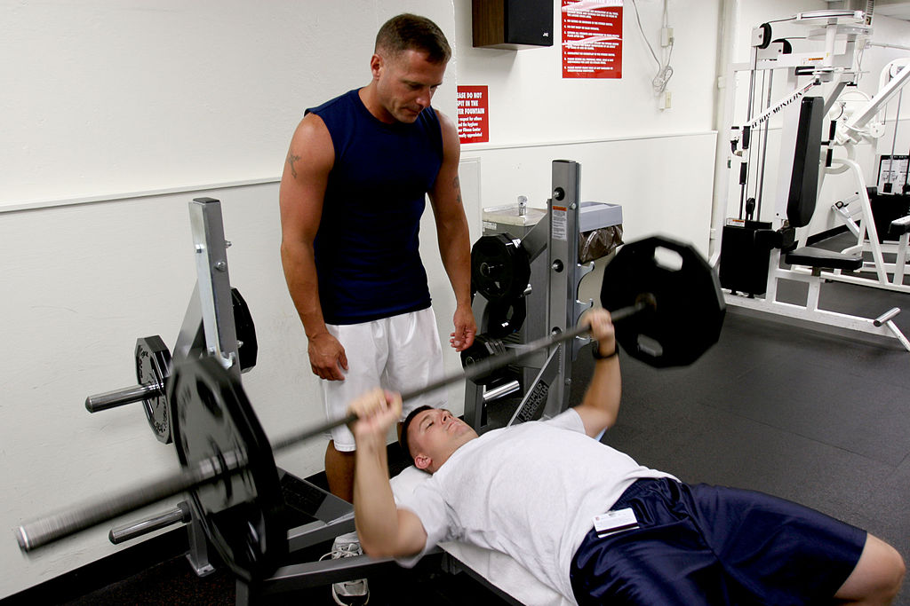

The bench press is an upper body strength training exercise that consists of pressing a weight upwards from a supine position. The exercise works the pectoralis major as well as supporting chest, arm, and shoulder muscles such as the anterior deltoids, serratus anterior, coracobrachialis, scapulae fixers, trapezii, and the triceps. A barbell is generally used to hold the weight, but a pair of dumbbells can also be used.[1]
The barbell bench press is one of three lifts in the sport of powerlifting (alongside the deadlift and squat) and is the only lift in the sport of Paralympic powerlifting.
It is also used extensively in weight training, bodybuilding, and other types of training to develop the chest muscles.
Calhan High School gymnasium in Calhan, Colorado
A gymnasium, also known as a gym, is a covered location for gymnastics, athletics, and gymnastic services. The word is derived from the ancient Greek gymnasium.[1] They are commonly found in athletic and fitness centers, and as activity and learning spaces in educational institutions. "Gym" is also slang for "fitness center", which is often an area for indoor recreation.
Gymnasia apparatus such as barbells, parallel bars, jumping board, running path, tennis-balls, cricket field, fencing area, and so forth are used as exercises. In safe weather, outdoor locations are the most conducive to health.[2] Gyms were popular in ancient Greece. Their curricula included Gymnastica militaria or self-defense, gymnastica medica, or physical therapy to help the sick and injured, and gymnastica athletica for physical fitness and sports, from boxing to dancing.[3]Their curricula included Gymnastica militaria or self-defense, gymnastica medica, or physical therapy to help the sick and injured, and gymnastica athletica for physical fitness and sports, from boxing to dancing.[3].Calhan High School gymnasium in Calhan, Colorado
Calhan High School gymnasium in Calhan, Colorado
A gymnasium, also known as a gym, is a covered location for gymnastics, athletics, and gymnastic services. The word is derived from the ancient Greek gymnasium.[1] They are commonly found in athletic and fitness centers, and as activity and learning spaces in educational institutions. "Gym" is also slang for "fitness center", which is often an area for indoor recreation.
Gymnasia apparatus such as barbells, parallel bars, jumping board, running path, tennis-balls, cricket field, fencing area, and so forth are used as exercises. In safe weather, outdoor locations are the most conducive to health.[2] Gyms were popular in ancient Greece. Their curricula included Gymnastica militaria or self-defense, gymnastica medica, or physical therapy to help the sick and injured, and gymnastica athletica for physical fitness and sports, from boxing to dancing.[3]Their curricula included Gymnastica militaria or self-defense, gymnastica medica, or physical therapy to help the sick and injured, and gymnastica athletica for physical fitness and sports, from boxing to dancing.[3].Calhan High School gymnasium in Calhan, Colorado